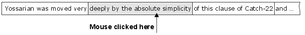
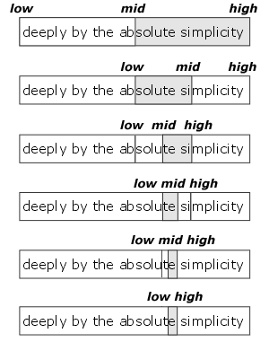
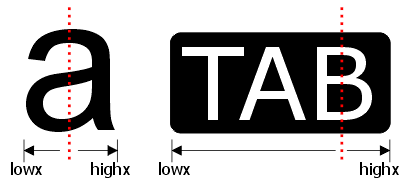
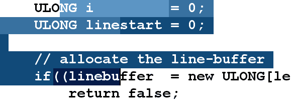

Mouse Selection & Highlighting
マウス入力は、これまでのNeatpadの中で最も複雑で書きにくい部分であることがわかりました。これは、Neatpadが可変幅フォントをサポートするようになったという事実によっても助けられませんでした。ある意味では、この余分な複雑さが良いことなのかどうかはまだわかりません（チュートリアル／学習の観点から）。しかし、もし私が固定幅フォントにこだわっていたら、その限られた機能から完全な可変幅ディスプレイに移行するのは誰にとっても大変な作業になっていたでしょうから、その意味では私の決断は正しかったと思います。
複雑さのほとんどは、TextViewクラスとTextDocumentクラスを意図的に分離したことが原因です。もし、TextViewが基礎となるファイルに直接メモリアクセスできるのであれば、コードのいくつかはもう少しシンプルになるでしょう。しかし、もし私たちが4GBのファイルエディタに移行しようとするならば、メモリ管理をTextDocumentクラスの後ろに隠し、GUIとファイル管理の間に厳格なインターフェイスを持たせ、一度に小さなチャンクでファイルの内容にアクセスしなければなりません。これでコードはすっきりしますが、少し難しくなります。さて、早速ですが、人がNeatpadのウィンドウ内でマウスポインタをクリックしたときに何が起こるかを見てみましょう。
Carets, Focus and Activation
Windowsでは、コントロール内でマウスがクリックされると、ウィンドウが入力フォーカスを受け取り、フォーカスの変化を示す何らかのグラフィカルなフィードバックが表示されることが期待される動作です。これは、Windows全体で一貫して見られるユーザーインターフェースの詳細です。
Windowsのデフォルトの動作は、この最初のウィンドウ起動時にWM_MOUSEACTIVATEメッセージを送信することです。しかし、このマウスクリックによって対象となるウィンドウが実際に入力フォーカスを受けることはありません-これは多くの人に知られていないし、理解もされていません。このWM_MOUSEACTIVATEメッセージを手動で処理して、自分でフォーカスを設定する必要があります。
case WM_MOUSEACTIVATE:
return ptv->OnMouseActivate();
LONG TextView::OnMouseActivate()
{
SetFocus(m_hWnd);
return MA_ACTIVATE;
}
これで、TextViewの中でマウスがクリックされると、入力フォーカスを受け取れるようになりました。さらに重要なのは、TextViewがWM_SETFOCUSという追加メッセージを受け取ることです。このメッセージの処理中に、キャレットを作って表示することができます。
case WM_SETFOCUS:
return ptv->OnSetFocus();
LONG TextView::OnSetFocus()
{
DWORD nWidth = 2;
SystemParametersInfo(SPI_GETCARETWIDTH, 0, &nWidth, 0);
CreateCaret(m_hWnd, (HBITMAP)NULL, nWidth, m_nLineHeight);
ShowCaret(m_hWnd);
RefreshWindow();
}
テキストキャレットは、メモ帳やVisual Studioと同じようになります。NULLビットマップハンドルを指定して、しっかりと点滅するキャレットを作成します。Windows 2000以降では、SystemParametersInfoのSPI_GETCARETWIDTHのリクエストが成功し、その設定を代わりに使用する場合を除き、キャレットの幅はちょうど2ピクセルになります。また、キャレットの高さはテキストの行数と同じになります。これは、Windowsでテキストキャレットを表示するためのごく標準的な方法です。
TextViewがinput-focusを失うたびに、WM_KILLFOCUSメッセージを受け取り、text-caretを隠したり、削除したりすることができます。
case WM_KILLFOCUS:
return ptv->OnKillFocus();
LONG TextView::OnKillFocus()
{
HideCaret(m_hWnd);
DestroyCaret();
RefreshWindow();
}
TextViewがフォーカスを受けたり失ったりするたびに、ウィンドウ全体が再描画されることに注意してください。これにより、ウィンドウにフォーカスがあるかどうかに応じて、テキスト選択部分を異なる色で描画することができます。次に、ウィンドウ内でマウスがクリックされたときに、キャレットを正しい位置に配置するという問題に移ります。しかし、ここまで来る前に決断しなければならないことがあります。
TextView Coordinates - offset or coordinate based?
先に進む前に決定しなければならないことがあります。現在のカーソル位置と選択開始/終了位置をどのように記録するかを決めなければなりません。以下に示す2つの選択肢があります。
1つ目の方法は、すべての「座標」を格納するために1つの32ビットのファイル・オフセットを使用することです。つまり、HexEditorや既存のEDITコントロールのようなものです。この方法の利点は、ファイルオフセットの保存、管理、および「操作」が非常に簡単であることです。デメリットとしては、ファイルオフセットがGUIに直接反映されないことです。ラインバッファの管理に余分な依存性が発生し、パフォーマンスの問題を引き起こす可能性があります。
2つ目の方法は、「テキスト座標」システムを使用することです。これには2つの値を使います。1つは行番号、もう1つはその行の中の文字オフセット（または列番号）です。この方法の利点は、画面に表示されているものに直接変換できることです。マウスやキーボードを使ってキャレットを動かすこと（ユーザーのGUI操作）は、より自然な座標系を使っているので、最初の方法よりもずっと簡単になる可能性があります。一方、デメリットは2つあります。まず、データアクセスがより困難になります。すべてのデータアクセスは、真のファイルオフセットを見つけるためにラインバッファを通過する必要がありますが、これもパフォーマンス上の問題となります。2つ目の欠点は、テキストペインティングです。x,y」の座標で比較を行うのは、単一の値で比較を行うよりもはるかに面倒です。例えば、x,y座標に基づいて文字を強調するかどうかを決定することは、単純な整数比較を行うよりもはるかに複雑です。
ULONG m_nCursorOffset;
ULONG m_nSelectionStart;
ULONG m_nSelectionEnd;
過去に2つの方法で実験したことがありますが、正直なところ、「純粋な」ファイルオフセット法と同じくらい複雑でした。このため、TextViewでは、テキスト座標の保存に、よりシンプルな「ファイルオフセット」方式を採用しています。これにより、マウス入力の処理の中にある難しい問題が切り離され、残りのコードが書きやすくなることを期待しています。
Placing the Text Caret
通常のエディットコントロールでユーザーがマウスをクリックすると、マウスの位置に最も近い文字の先頭にテキストキャレットが置かれます。一見、当たり前のことのように思えますが、この単純な操作が、これまでに取り組んできた中で最も複雑な作業になりそうです。
ユーザがマウスをクリックしたときに受け取る最初の有用なメッセージはWM_LBUTTONDOWNです。このメッセージのハンドラを以下に示しますが、実はとても簡単です。オフセットベースの座標を使っているか、テキストベースの座標を使っているかは関係ないように構成しています。
LONG TextView::OnLButtonDown(UINT nFlags, int mx, int my)
{
ULONG nLineNo;
ULONG nCharOff;
ULONG nFileOff;
int xpos;
// map the mouse-coordinates to a real file-offset-coordinate
MouseCoordToFilePos(mx, my, &nLineNo, &nCharOff, &nFileOff, &xpos);
SetCaretPos(xpos, (nLineNo - m_nVScrollPos) * m_nLineHeight);
// erase any existing selection
InvalidateRange(m_nSelectionStart, m_nSelectionEnd);
// reset cursor and selection offsets to the same location
m_nCursorOffset = nFileOff;
m_nSelectionStart = nFileOff;
m_nSelectionEnd = nFileOff;
// set capture for mouse-move selection
m_fMouseDown = true;
SetCapture(m_hWnd);
return 0;
}
実行しなければならない基本的な作業は2つあります。1つ目は、ファイル内のどのテキスト文字がクリックされたかを特定することです。この選択された文字のゼロベースのファイルオフセットを取得する必要があります（これにより、現在のカーソル位置を追跡することができます）。2つ目のタスクは、ステップ#1で選択した文字の隣にテキストキャレットを配置することです。
これらの複雑な操作は、MouseCoordToFilePosという1つのTextViewメンバー関数の中に隔離されています。この関数の目的は、行番号、その行内の文字のオフセット（つまり列番号）、物理的なファイルのオフセット、そして最後に画面に表示される文字のx座標を返すことです。
BOOL MouseCoordToFilePos (int mx, // mouse x-coordinate
int my, // mouse y-coordinate
ULONG *pnLineNo, // [out] line number
ULONG *pnCharOffset, // [out] column number
ULONG *pnFileOffset, // [out] file-offset
int *px); // [out] adjusted x coordinate
この機能の完全なコードをここに掲載するかどうかはわかりません。というのも、できるだけわかりやすく、シンプルにするために、これからも手を加えていく可能性があるからです。しかし、基本的な操作を説明することで、この操作で何が行われているかを正確に理解してもらいたいと思います。
Find the line-number
まず最初にやるべきことは、マウスの下にあるテキストの行を見つけることです。ここでは、高さが固定されたテキスト行を使用しているので（つまり、すべてのテキスト行が同じである）、これは非常に簡単です。
ULONG lineno = (my / m_nLineHeight) + m_nVScrollPos;
ワードプロセッサやHTMLビューアを書いていたら、上記の操作はもっと複雑になるでしょうが、私たちのシンプルなテキストエディタでは、マウスのY座標をラインハイトで割るだけで十分です。後述するように、現在どの行を見ているかを知ることは非常に重要です。なぜならば、カーソルのX位置を計算するためには、テキストの各行を解析する必要があるからです。
The GetTextExtent problem
扱っているテキストの行がわかったら、その行の中でどの文字が選択されているかを調べる必要があります。行の中にタブやコントロール文字が含まれている可能性があるため（あるいは可変幅のフォントを使用している場合）、どの文字がマウスに該当するかを調べるためには、行全体（最初から）を解析する必要があります。
Windowsには、文字列の大きさを（ピクセル単位で）指示するAPIがたくさんあります。しかし、逆の変換を行うAPIはありません。つまり、指定されたスペース内に何文字が収まるかということです。Windows 2000からは、この問題を解決するために、GetTextExtentPointIとGetTextExtentExPointIという2つの新しいルーチンが導入されました。
しかし、Windows 2000だけに頼るわけにはいきません。TextView/TextDocumentのGUIとファイルの分離（つまり、コンテンツにチャンクでアクセスする）のために、どの文字が選択されたかを知るためには、独自の戦略を立てなければなりません。
まず、固定サイズのブロックでテキストの行にアクセスすることから始めます。このようにして、各テキストブロックの幅は、関数 NeatTextWidth（基本的には GetTextExtentPoint32 のラッパーですが、タブやコントロール文字も考慮に入れます）を使って計算されます。そして、マウスのX座標がこのテキストブロックの中に入っているかどうかをチェックします。
">
上の写真は、このプロセスをかなり明確に示していると思います。これは全く正確ではありません（意図したものでもありません）。この段階で必要なのは、マウスがどこに置かれたかについての大まかな推測です。以下のコードスニペットは、基本的にここで起こっていることです。
int curx = 0;
int charoff = 0;
for(;;)
{
// grab some text
if((len = m_pTextDoc->getline(nLineNo, charoff, buf, TEXTBUFSIZE, &fileoff)) == 0)
break;
// find it's width
int width = NeatTextWidth(hdc, buf, len, -(curx % TABWIDTHPIXELS));
// does the cursor fall within this segment?
if(mx >= curx && mx < curx + width)
{
// narrow down the search
}
// move onto the next block
curx += width;
charoff += len;
}
正しいテキストブロックが特定されたら、「バイナリチョップ」と呼ばれるアルゴリズムを使って検索を絞る必要があります。
Binary-Chop
これで1文字レベルでの作業になりました。効率的な理由から、各文字に対してNeatTextWidthを順番に呼び出したくないので、バイナリチョップ（またはバイナリサーチ）はこのような状況に最適です。下図は、このアルゴリズムの動作を示しています。
検索を追跡するには、lowとhighという2つの変数を使います。これらの変数は、検索する文字バッファのオフセットを指定します。これらのオフセットは、バッファの両端から始まり、内側に向かって移動していき、インターチェンジごとに検索を狭めていきます。
">
各反復において、低値と高値の中間点を取ります。そして、マウスの座標を比較して、カーソルがこの中間点のどちら側にあるかを確認します。カーソルが左にある場合は、このセグメントの中央に配置し、右にある場合は同様にします。最終的には、この小さなピクセル範囲のどこかにマウスを置いて、1つの文字（低が高よりちょうど1つ少ない）にクローズインするところまでたどり着きます。
int low = 0;
int high = len;
int lowx = 0;
int highx = width;
while(low < high - 1)
{
int newlen = (high - low) / 2;
width = NeatTextWidth(hdc, buf + low, newlen, -lowx-curx);
if(mx - curx < width + lowx)
{
high = low + newlen;
highx = lowx + width;
}
else
{
low = low + newlen;
lowx = lowx + width;
}
}
コンピュータサイエンスの用語では、この方法はO(log~2~n)の効率を持っています。実際、バイナリサーチは非常に効率的なアルゴリズムであり、非常に長いテキスト行であっても、かなり高速に処理できるはずです。可変幅のフォントの場合、このような処理を行うには他に方法がありません。もちろん、固定幅のフォント表示の場合は、一度に行全体をスキャンすることもできますが、コードが乱雑になるだけなので、まだ「過剰な最適化」は行いません。
Snap to middle of character
この時点で、どのキャラクターがマウスでクリック／選択されたのかがわかり、そのキャラクターの開始位置と終了位置のx座標が変数lowxとhighxに入っています。
">
最後に実装すべきことは、テキストカーソル（キャレット）を文字のどちら側に置くかということです。杜撰なテキストエディタでは、単純に各文字の先頭に「切り捨て」てしまいます（つまり、lowx座標を選択することで、カーソルを文字の先頭に配置してしまうのです）。しかし、各文字の中心を使ってキャレットをどちら側に置くかを決めることで、より自然な「感じ」を得ることができます。
if(mousepos > highx - FontWidth/2)
caret = highx;
else
caret = lowx;
上図の「TAB」文字では、選択線が中央ではなく右側に配置されていることに注目してください。これは、Visual StudioがTAB（または1文字以上のコントロール文字）の上にカーソルを置いたときの動作を再現するために、意図的に行っているものです。
Selecting with the mouse
これでTextView内の任意の文字の下にテキストキャレットを配置できるようになったので、マウス選択に移る準備ができました。WM_LBUTTONDOWNを処理したときのことを思い出してください。m_nCursorOffset、m_nSelectionStart、m_nSelectionEnd変数はすべて同じ場所を指すように設定されています。
マウスをドラッグして選択範囲を広げるには、WM_MOUSEMOVEメッセージを処理します。ここでも、MouseCoordToFilePosを使って、マウスの下のファイルオフセットを取得します。ここで、m_nSelectionStartをそのままにして、m_nSelectionEnd変数だけを変更して、この新しいオフセットを「指し示す」ようにします。これは、選択範囲を広げる効果があります。これを画面に反映させるためには、当然ながらディスプレイを再描画する必要がありますが、ここからが厄介なところです。
LONG TextView::OnMouseMove(UINT nFlags, int x, int y)
{
if(m_fMouseDown)
{
ULONG nLineNo, nCharOff, nFileOff;
int px;
MouseCoordToFilePos(x, y, &nLineNo, &nCharOff, &nFileOff, &px);
// update the area that has changed
if(m_nSelectionEnd != nFileOff)
{
InvalidateRange(m_nSelectionEnd, nFileOff);
SetCaretPos(px, (nLineNo - m_nVScrollPos) * m_nLineHeight);
m_nSelectionEnd = nFileOff;
RefreshWindow();
}
}
}
WM_MOUSEMOVEハンドラ(上)は、WM_LBUTTONDOWNハンドラとよく似ています。まず、マウスのx,y座標をファイルオフセットに変換します。このオフセットが現在のカーソルオフセットと異なると仮定すると、テキストキャレットを再配置し、古い選択終了点と新しいカーソル位置の間のテキストの領域を再描画することができます。
Invalidate a range of text
優れた選択/ハイライト戦略の鍵となるのは、一度に最低限の再描画しか行わないことです。パフォーマンスのためではなく、単純にちらつきを避けるために、変化のある場所だけを描き、それ以外の場所は描かないようにしなければなりません。InvalidateRangeメンバ関数はまさにこれを行います。
LONG TextView::InvalidateRange(ULONG nStart, ULONG nFinish);
2つのパラメータ（nStartとnFinish）は、ファイルオフセットとして範囲を指定します。InvalidateRangeは、この2つのパラメータをスクリーン座標に変換して、指定した範囲だけを再描画させるのが仕事です。これはMouseCoordToFilePosとは全くの「逆」で、ファイルオフセットからスクリーン座標に戻しています。ファイルオフセットやテキスト座標など、どのような座標系を使用しても構いませんが、実際には重要ではありません。ここで重要なのは、再描画を選択範囲の変更に限定するというコンセプトです。
指定された領域は無効化され（一連のInvalidateRectの呼び出しを使用）、実際の描画を行うタスクはすでに実装したWM_PAINTハンドラに任されます。
WM_PAINTハンドラが一度に全行を再描画しても、特定の領域を無効にしているため、ウィンドウの更新領域が出力をクリップし、変更されていない領域に描画することができません。
">
上の写真は、「選択中」の状態を表しています。選択は 4 つのステップで行われ、最も明るい青色のセグメントから始まっています。基本的なアイデアは、タスクを行ごとに分割し、テキストのスパンごとに InvalidateRect を呼び出すことです。私が示したいのは、選択範囲の変更は、1つの線上の小さなセグメントである場合もあれば、複数の線を同時に含む変更である場合もあるということです。
InvalidateRange関数（どのように実装するかは別として）は、これらの異なるシナリオを正しく処理できなければなりません。ここで関数本体を説明してもあまり意味がないので、そろそろチュートリアルのこの部分を終了します。
Coming up in Part 6
マウスの選択は非常に難しい問題ですが、このような作業に何が必要かを理解していただくために、十分な説明をしたつもりです。また、これはシンプルなテキストエディタであることを覚えておいてください。様々な種類のテキストやグラフィックを扱わなければならない本物のワープロやウェブブラウザを書くのがどれほど難しいか想像してみてください。
第6回は、今回実装したものに「マウススクロール」を加えたものです。